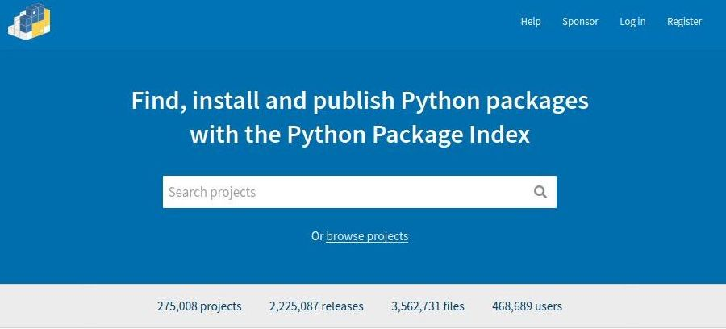
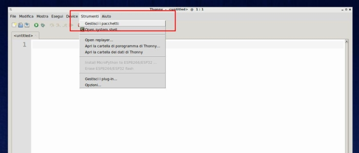
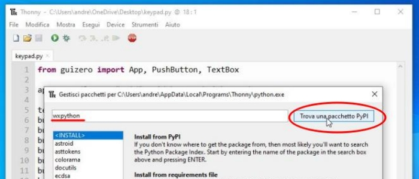
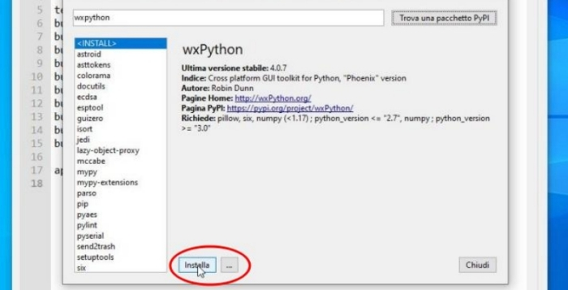
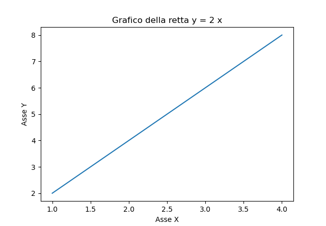
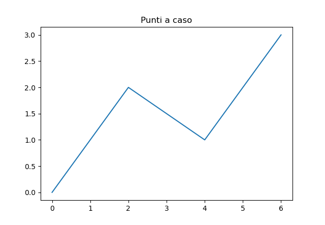
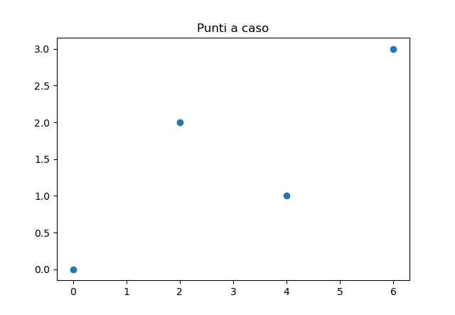
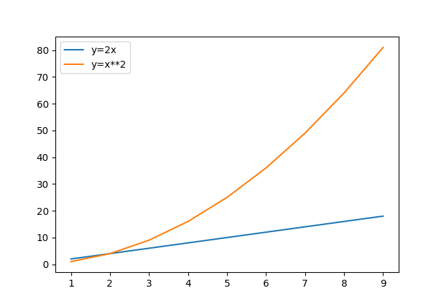
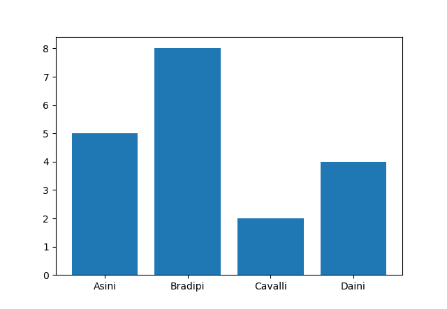

Moduli Python
Il capitolo sui moduli Python è uno dei più impegnativi del corso. Non tanto per la difficoltà degli argomenti in sè, ma perché i moduli sono un concetto centrale della programmazione in Python: è impossibile pensare al linguaggio Python senza abbinarlo all'utilizzo dei suoi moduli!
Il capitolo è organizzato per gradi, per fare uno step alla volta:
-
Nel primo sottocapitolo, Lavorare con i moduli, viene illustrata la creazione di un modulo contenente alcune funzioni da parte del programmatore e il suo utilizzo in vari ambiti.
-
Riusciti in questo primo step, nel sottocapitolo Moduli Standard si passa all'utilizzo dei moduli Python predefiniti, quelli in dotazione con la Python Standard Library: in questo caso il focus si sposta sull'utilizzo di moduli prodotti da altri, sulla consultazione della documentazione, sull'utilizzo dei moduli Python di base
-
Il terzo livello, nel sottocapitolo Moduli PyPi, si occupa del reperimento, l'installazione e l'utilizzo di moduli terzi, ovvero attualmente non disponibili nel nostro sistema, che implementano una funzionalità per noi interessante e/o utile per il software che vogliamo sviluppare.
Al lavoro!
Lavorare con i moduli
Come accennato, in questo capitolo ci occuperemo di implementare un modulo scrivendo tutto il codice, investigando i concetti di base e procedendo ai test semplici delle funzionalità implementate.
Istruzione import
In Python la clausola import si utilizza per rendere disponibile il codice in un modulo in un altro. Questo concetto rende semplice l'organizzazione del codice in senso logico, sia dal punto di vista dei file che dal punto di vista dell'organizzazione globale del codice.
Dal punto di vista dei file, ogni modulo è ben organizzato perché contiene codice coerente: un ipotetico modulo numeri conterrà funzioni che lavorano coi numeri, un modulo statistiche contiene funzioni per il calcolo statistico, etc..
Dal punto di vista dell'organizzazione globale del codice, l'importazione di un modulo genererà un namespace che manterrà semplice la gestione del codice.
Capisco che il secondo punto di vista necessita di un ulteriore chiarimento: dal punto di vista intuitivo, noi abbiamo già usato il modulo random per le nostre liste numeriche. Allora
scriviamo:
import random
# per accedere alle funzioni del modulo random, dobbiamo scrivere modulo.funzione
intero = random.randint(1,100)
Questa organizzazione imposta dall'import (ovvero modulo.funzione) permette di capire chiaramente che la funzione randint deriva dal modulo random e non è stata definita all'interno
di questo modulo. Quando le importazioni saranno di più e i moduli scritti da noi più lunghi, questa cosa inizierà ad essere molto utile.
Inoltre il namespace indotto preserva le funzioni importate da un altro importante problema: se molte persone diverse scrivono codice potrebbe tranquillamente capitare che due funzioni
scritte da persone diverse, su moduli diversi, abbiano lo stesso nome. Il namespace impedisce confusione in questo caso.
Nomi dei moduli
Tutte le persone hanno un nome che le identifica (ad esempio il mio nome è Andrea), ma quando le persone parlano di se stesse usano la parola io (io mi chiamo Andrea).
E fin qui mi sembra tutto semplice.
Abbiamo detto finora (e nel dubbio, lo ripeto con chiarezza) che anche i moduli, ovvero i file Python con estensione .py, hanno un nome, che dipende dal nome del file stesso:
ad esempio, il file pippo.py definisce il modulo di nome pippo. Ogni volta che definite un modulo, Python inizializza alcune variabili speciali, fra cui la variabile __name__
che contiene il nome del modulo (fra un attimo faccio un esempio).
Così come le persone, parlando di se stesse, dicono io, i moduli, al loro interno non utilizzano il loro nome, ma utilizzano la parola __main__.
Cerchiamo di chiarire subito questo primo concetto, il resto verrà naturalmente di conseguenza:
# file pippo.py
# la variabile __name__ si riferisce al nome del modulo pippo
# essendo al suo interno, conterrà la parola "__main__"
print(__name__)
# file ciccio.py
# importo il modulo pippo, dell'esempio 1
# importando il modulo, andrò ad eseguirlo. la print sopra (eseguita all'esterno del modulo pippo)
# scriverà il suo nome: "pippo".
import pippo
# la variabile __name__ qui sotto si riferisce al nome del modulo ciccio
# essendo al suo interno, conterrà la parola "__main__"
print(__name__)
# la variabile __name__ qui sotto si riferisce al nome del modulo pippo
# NON essendo dentro al modulo pippo, conterrà il suo nome proprio, ovvero "pippo"
print(pippo.__name__)
Tutto qui 
Testing
Dalle considerazioni fatte nei precedenti capitoli, vorrei farvi capire una tecnica molto utilizzata in ambito Python per l'esecuzione dei moduli e i test delle funzioni in essi contenute.
La strategia è questa:
- scrivo il modulo con la definizione delle funzioni che mi interessano
- faccio delle prove per assicurarmi che tutto... funzioni! (faccio i test!!!) in fondo al file, dentro un
if __name__ == "__main__" - Se eseguo direttamente il modulo con le funzioni, l'if mi permette di svolgere i test (e verificare che tutto funzioni correttamente)
- Se importo il modulo in un altro contesto, il suo nome NON sarà "main" e i test non saranno svolti, permettendo di importare solo le funzioni!
Da questa spiegazione, deriva questa modalità di scrittura dei moduli con funzioni:
# file prova.py
def molt(fatt1:float,fatt2:float) -> float:
"""
prende i valori nei parametri fatt1,fatt2 e ritorna il prodotto fatt1 * fatt2
Ad esempio: molt(4,5) ritorna 20
Parametri
---------
fatt1
un numero reale, il primo fattore della moltiplicazione
fatt2
un numero reale, il secondo fattore della moltiplicazione
"""
return fatt1 * fatt2
# questa parte NON sarà eseguita all'esterno del modulo "prova"
if __name__ == "__main__":
x = 5
y = 4
print("x:",x)
print("y:",y)
print( f"molt({x},{y}):{molt(x,y)}" )
# ... e così via...
Da ora in poi scriveremo così i nostri moduli e in questo modo faremo tutti gli esercizi che seguono. Questo ci permetterà di definire un modus operandi logico e professionale, che ci tornerà enormemente utile quando le cose diventeranno inevitabilmente più complicate.
Adesso, sotto con gli esercizi!
Esercizi sui moduli
Nota
Ognuno dei seguenti esercizi deve essere implementato in un unico file, nominato con il nome indicato nell'intestazione dell'esercizio, completo di documentazione e di (almeno) 3 casi di test per ognuna delle funzioni implementate!!!
Esercizio 601: modulo "SequenzeNumeriche"
minoriDiUnElemento
Creare una funzione che, data una sequenza numerica (tupla o lista) e un
numero qualsiasi, conta quanti numeri nella sequenza sono minori del
numero.
sommaElementi
Creare una funzione che, data una sequenza numerica (tupla o lista),
restituisce la somma dei numeri della sequenza.
mediaElementi
Creare una funzione che, data una sequenza numerica (tupla o lista),
restituisce la media aritmetica dei numeri della sequenza.
Esercizio 602: modulo "ManipolazioneStringhe"
lunghezzaStringa
La funzione prende una stringa come parametro e ritorna il numero di
caratteri di cui è composta (la sua lunghezza)
contaLettera
La funzione prende una stringa e una lettera come parametro e ritorna il
numero di volte in cui la lettera è presente all'interno della stringa
tutteMaiuscole
La funzione prende una stringa come parametro e ritorna la stringa
trasformata in maiuscolo
tutteMinuscole
La funzione prende una stringa come parametro e ritorna la stringa
trasformata in minuscolo
invertiMaiuscoleMinuscole
La funzione prende una stringa come parametro e ritorna la stringa con
maiuscole e minuscole invertite.
inizialiMaiuscole
La funzione prende una stringa come parametro e ritorna la stringa
trasformata in minuscolo con le iniziali di ogni parola maiuscole
Esercizio 603: modulo "PianoCartesiano"
quadrante
La funzione prende due numeri x, y che rappresentano le coordinate del
punto P nel piano cartesiano e restituisce un numero corrispondente al
quadrante nel quale esso si trova, ovvero un numero fra 1 e 4.
Restituisce 0 nel caso che il punto sia su uno degli assi cartesiani.
distanzaOrigine
La funzione prende due numeri x, y che rappresentano le coordinate del
punto P nel piano cartesiano e restituisce la distanza del punto P
dall'origine degli assi, ovvero dal punto O di coordinate (0,0).
distanzaFraDuePunti
La funzione prende quattro numeri xP, yP, xQ, yQ che rappresentano le
coordinate dei punto P e Q nel piano cartesiano e restituisce la
distanza fra loro.
Esercizio 604: modulo "CifreNumeriche"
unità
La funzione prende un numero come parametro e restituisce la cifra delle
unità. Ad esempio unita(23) restituisce 3, unita(8174.56) restituisce 4.
decine
La funzione prende un numero come parametro e restituisce la cifra delle
decine. Ad esempio decine(23) restituisce 2, decine(8174.56) restituisce 7.
centinaia
La funzione prende un numero come parametro e restituisce la cifra delle
centinaia. Ad esempio centinaia(23) restituisce 0, centinaia(8174.56)
restituisce 1.
migliaia
La funzione prende un numero come parametro e restituisce la cifra delle
migliaia. Ad esempio migliaia(23) restituisce 0, migliaia(8174.56)
restituisce 8.
decimi
La funzione prende un numero come parametro e restituisce la cifra dei
decimi. Ad esempio decimi(23) restituisce 0, decimi(8174.56) restituisce
5.
centesimi
La funzione prende un numero come parametro e restituisce la cifra dei
centesimi. Ad esempio centesimi(23) restituisce 0, centesimi(8174.56)
restituisce 6.
Esercizio 605: modulo "FunzioniNumeriche"
sommaDivisori
La funzione prende un numero intero come parametro e restituisce la
somma dei suoi divisori propri (ovvero dei divisori minori del numero
stesso)
listaDivisori
La funzione prende un numero intero come parametro e restituisce la
lista dei suoi divisori propri (ovvero dei divisori minori del numero
stesso)
isPrime
La funzione prende un numero intero come parametro e restituisce True se
il numero è primo, false altrimenti. (sugg: se un numero è primo il suo
unico divisore proprio è 1...)
perfetto
La funzione prende un numero intero come parametro e restituisce True se
il numero è perfetto, False altrimenti (un numero si dice perfetto se e
solo se è uguale alla somma dei suoi divisori propri)
nthPrime
La funzione prende un numero intero come parametro e restituisce
l'ennesimo numero primo. Ad esempio dato 3, la funzione restituisce 5
perché, essendo i numeri primi 2, 3, 5, 7, 11, etc... 5 è il terzo
numero primo.
semiPrimo
La funzione prende un numero intero come parametro e restituisce True se
il numero è semiprimo, False altrimenti. Un numero si dice semiprimo se
è esprimibile come prodotto di due numeri primi. Ad esempio 6 = 2 per 3 è
semiprimo, 7 = 7 per 1 non è semiprimo, infatti 1 non è primo.
Moduli Standard
Ovviamente l'utilità dei moduli non è solo organizzativa, ma... storica!!! Immaginate se qualcuno avesse raccolto tutte le funzioni più "fighe" scritte in Python e le avesse catalogate in gruppi omogenei; ad esempio le funzioni aritmetiche, le funzioni per le stringhe, le funzioni per data e ora e così via.
Beh... qualcuno lo ha fatto! Ed ha creato la Python Standard Library.
Essa non è nient'altro che una collezione di moduli, inclusi per semplicità in qualunque installazione Python,
che quindi possiamo utilizzare semplicemente scrivendo import nomeModulo.
Fighissimo!
Elenco qui alcuni fra i moduli più comuni, indicando il nome e una descrizione sommaria:
random: Generazioni di numeri "pseudo-casuali"math: Operazioni matematiche comunitime: Gestione Tempodatetime: Gestione Data e Orapathlib: Accesso a file e directoriescsv: Lettura e Scrittura su file csv
Se questi elencati non vi bastano e siete curiosi su quanti ce ne siano effettivamente, provate a consultare la documentazione ufficiale: https://docs.python.org/3/library/index.html.
Ancora non vi basta? Bene! Allora sappiate che ci sono altre migliaia di moduli pieni zeppi di funzioni utili per gli incarichi più disparati, già catalogati e liberi di essere utilizzati da chiunque! La differenza con i precedenti è che questi non fanno parte della Python Standard Library, ma sono elencati semplicemente nel Python Package Index (https://pypi.org/).
Ma questa è la storia del prossimo capitolo (Moduli PyPi). Per adesso, guardiamo qualcuno dei moduli standard!
Suggerimento
La documentazione ufficiale (in inglese) di ogni modulo è inserita nel modulo stesso: per ottenerla, dato il modulo "NomeModulo", basta scrivere nell'interprete:
>>> import NomeModulo
>>> dir(NomeModulo)
>>> help(NomeModulo.FunzioneInteressante)
Prova con uno dei moduli elencati sopra!!!
Modulo random
Serve per operazioni che richiedono una certa "casualità", anche se il termine corretto sarebbe "pseudocasualità". Vediamo una carrellata delle funzioni pià interessanti del modulo. Per tutte le altre... ormai dovreste aver capito!!!
Funzione randint
Dato un intervallo (con entrambi gli estremi inclusi) seleziona un numero pseudocasuale al suo interno
Funzione choice
Applicata ad una sequenza generica ritorna un elemento casuale della stessa (utile per le estrazioni)
import random
lista = [ 1, 2, 3, 4, 5]
numero = random.choice(lista) # scegle un elemento della lista (a caso)
print(numero) # scrive.... (boh, ad esempio)... 4
Funzione shuffle
funziona solo con le liste e serve per mescolare la lista passata come parametro. Ovviamente non ritorna valori.
import random
lista = [ 1, 2, 3, 4, 5]
random.shuffle(lista) # mischia la lista
print(lista) # ad esempio: [4, 3, 1, 5, 2]
Non è affatto difficile! Provate a fare i seguenti esercizi aiutandovi anche con la documentazione integrata.
Esercizio 621 (randint)
Riempire una lista con 5 numeri casuali fra 1 e 90 diversi fra loro. Pronta la cartella della tombola!!!
Esercizio 622 (randint)
Generare 5 numeri casuali fra 0 e 1 con 2 cifre esatte dopo la virgola (sugg: genera interi fra 0 e 100, dividi per...)
Esercizio 623 (choice)
Dichiarare una tupla contenenti l'elenco dei cognomi della classe ed estrarne uno con choice. Chi esce sarà interrogato!!!
Esercizio 624 (choice)
Creare una lista contenente i numeri da 1 a 10 ed estrarre un numero con choice. Provvedere successivamente ad eliminare il numero estratto dalla lista e visualizzare la stessa.
Esercizio 625 (shuffle)
Dichiarare una lista contenente l'elenco dei cognomi della classe (in ordine alfabetico) e mischiarla con shuffle. Visualizzare la lista mescolata: quello sarà l'ordine delle interrogazioni!!!
Esercizio 626 (shuffle)
Creare una lista contenente i numeri da 1 a 10 e mescolarla. Visualizzare la lista nel nuovo ordine ottenuto e successivamente riordinarla.
Modulo math
Contiene tutte le funzioni matematiche utili per le operazioni su esponenziali, logaritmi, trigonometria, etc...
# esempi di operazioni varie
import math
math.log(10) # logaritmo in base e di 10
math.cos(math.pi) # coseno di 90 gradi (pi greco radianti)
math.factorial(5) # fattoriale di 5, ovvero 5! = 1 * 2 * 3 * 4 * 5
math.sqrt(12) # radice quadrata di 12
math.gcd(345,678) # Massimo Comun Divisore
math.lcm(345,678) # Minimo Comune Multiplo (da Python 3.9)
ceil/floor/trunc # RTFM
Il modulo math si porta dietro anche una serie di costanti famose:
# variabili (pre)definite in math:
# math.e = 2.718281828459045 (numero di Nepero)
# math.inf = inf (più infinito)
# math.nan = nan (not a number. PS: hai combinato qualcosa)
# math.pi = 3.141592653589793 (pi greco)
Esercizio 631 (sqrt)
Scrivere una funzione che calcola le soluzioni dell'equazione di
secondo grado Ax^2 + Bx + C = 0.
In particolare la funzione prende come parametri i coefficienti A, B, C dell'equazione e restituisce la lista delle soluzioni reali della stessa.
La lista può contenere 0, 1, 2 soluzioni (anche coincidenti) a seconda dei casi.
Esercizio 632 (sqrt, floor)
Scrivere una funzione per calcolare la radice quadrata intera di un
numero. La radice quadrata intera di un numero x è il più grande intero
n tale che n * n <= x.
Provate a scrivere questa funzione con l'aiuto del modulo math (facile) e provate a scriverne una analoga senza (un po' più complicato)
Esercizio 633 (gcd , lcm)
Scrivere una funzione che prende numeratore e denominatore di una frazione e ritorna una tupla di 2 valori contenenti numeratore e denominatore ridotti ai minimi termini. Ad esempio, la funzione riduci(15,6) ritorna la tupla (5,2).
Esercizio 634 (gcd , lcm)
In una piazza si trova il capolinea di tre linee di tram: A, B, e C. Il tram A parte ogni TOT_A minuti, il tram B ogni TOT_B minuti, il tram C ogni TOT_C minuti. Ogni quanti minuti i 3 tram si ritrovano al capolinea insieme? Implementare la funzione calcolaMinuti(TOT_A, TOT_B, TOT_C) che ritorna il numero di minuti che bisogna aspettare per avere di nuovo i 3 tram insieme al capolinea.
Modulo time
Il modulo time in Python gestisce l'interazione con il temporizzatore del computer in cui esso viene
eseguito ed è dunque in grado di effettuare operazioni collegate al tempo, come:
- aspettare per un lasso di tempo
- controllare l'orario corrente
- formattare l'orario in base alle sue componenti.
Vediamo alcuni esempi:
Funzione sleep
Serve per mettere in stand-by lo script Python per un certo numero di secondi (vale anche la virgola!!!)
Funzione time
Questa funzione ritorna il numero di secondi trascorsi da Epoch (noi diremmo... dalla notte dei tempi)!
In realtà, epoch non è altro che January 1, 1970, 00:00:00 UTC
import time
# il numero di secondi trascorsi da Epoch
seconds = time.time()
print("Seconds since epoch:", seconds)
Partendo da questa, abbiamo varie possibilità per la formattazione e la gestione di questo tempo:
Funzioni *time
In questo caso mi viene più semplice presentare alcune delle funzioni di tempo con qualche esempio:
import time
seconds = time.time()
# ctime:
# prende i secondi trascorsi e ritorna una stringa
local_time = time.ctime(seconds)
print("Local time:", local_time)
# Scrive: Local time: Wed Dec 28 08:16:19 2022
# localtime:
# prende i secondi trascorsi e ritorna struct_time, una tupla contenente le informazioni
# sul tempo: anno, mese, giorno, ore, minuti, secondi, nome del giorno, giorno dell'anno, bisestile
res = time.localtime(seconds)
print("result:", res)
# Scrive: result: time.struct_time(tm_year=2022, tm_mon=12, tm_mday=28, tm_hour=8, tm_min=8, tm_sec=53, tm_wday=2, tm_yday=362, tm_isdst=0)
# mktime:
# prende una tupla di tipo struct_time e ritorna il numero di secondi passati da Epoch per quella data
time_tuple = (2022, 12, 28, 8, 44, 4, 4, 362, 0)
seconds = time.mktime(time_tuple)
print(seconds)
# Scrive: 1672217044.0
# asctime:
# prende una tupla di tipo struct_time e ritorna una stringa che la rappresenta
res = time.asctime(time_tuple)
print(res)
# Scrive: Fri Dec 28 08:44:04 2022
Esercizio 641
Visualizza l'ora corrente in ORE:MINUTI:SECONDI (sugg: visualizza i giusti campi della tupla di tempo)
Esercizio 642
Chiedi all'utente un numero grande a piacere e calcola se è primo. Dopo aver risposto alla domanda visualizza quanto tempo il tuo programma ha impiegato a calcolarlo.
Esercizio 643
Calcola quanti secondi sono trascorsi dal 1 gennaio di quest'anno a oggi.
Modulo datetime
Contiene le funzioni per la manipolazione di data e ora. Contiene 4 classi diverse a cui si accede con l'operatore PUNTO (.):
- la classe Date per la gestione della data, con giorno, mese ed anno;
- la classe Time per la gestione dell'orario, con ore, minuti, secondi e microsecondi;
- la classe DateTime per la gestione di Data e Ora: praticamente è la classe unione delle due precedenti;
- la classe TimeDelta per il calcolo delle differenze di tempo.
Vediamo alcuni esempi per chiarire i concetti espressi.
import datetime
# nell'ordine: anno, mese, giorno
scopertaAmerica = datetime.date(1492, 10, 12)
# nell'ordine: ore, minuti, secondi
oraDellaPausa = datetime.time(16, 40, 00)
# nell'ordine: anno, mese, giorno, ore, minuti, secondi
uomoSullaLuna = datetime.datetime(1969, 7, 20, 20, 18, 00)
# con le variabili nominali: giorni, secondi, microsecondi, millisecondi, minuti, ore, settimane.
# (i campi con valore 0 possono essere omessi)
fra3giornie2ore = datetime.timedelta(days=3, seconds=0, microseconds=0, milliseconds=0, minutes=0, hours=2, weeks=0)
Successivamente vedremo uno o due esempi che coinvolgono la classe TimeDelta.
Per visualizzare informazioni sulle classi in oggetto ricordatevi di utilizzare le funzioni dir() e help():
Una delle cose più semplici da fare con queste classi è ottenere ora e data correnti:
# Per la classe Date, possiamo ottenere il giorno odierno
oggi = datetime.date.today() # vale 2019-05-23
# La classe Time NON ha un metodo per l'ora corrente.
# Dobbiamo usare la classe DateTime
adesso = datetime.datetime.now() # vale 2019-05-23 19:26:03.478039
Una volta impostata una data o un'ora è possibile accedere ai valori dei campi che la caratterizzano:
print("Anno: ", adesso.year)
print("Mese: ", adesso.month)
print("Giorno: ", adesso.day)
print("Ore: ", adesso.hour)
print("Minuti: ", adesso.minute)
print("Secondi: ", adesso.second)
L'accesso ai valori dei campi che caratterizzano una variabile
di tipoDate,DateTime,Timeè sempre in sola lettura.
Questo significa che possiamo visualizzare i valori come fatto qui sopra, ma non possiamo utilizzare questi campi per modificare una data. Per essere completamente espliciti, non è possibile fare operazioni tipo le seguenti:
dataAcaso = datetime.datetime(2022, 6, 4, 13, 0, 0)
dataAcaso.year = 2020 # ERRORE
dataAcaso.hour = 12 # ERRORE. (capito? Non si può...)
Le date non sono fatte per essere modificate. Invece di cambiarne una... create un'altra variabile!
Per visualizzare date, ore o data con ora a piacimento, tutte e tre le classi mettono a disposizione la funzione strftime() che prende
l'oggetto Data (o Ora, o Data e Ora) e ritorna una stringa personalizzata, secondo i seguenti parametri (ho messo solo i
principali...):
| Parametro | Descrizione | Esempio |
|---|---|---|
| %a | Giorno della settimana (breve) | Wed |
| %A | Giorno della settimana | Wednesday |
| %w | Giorno della settimana come numero: 0 è Domenica | 3 |
| %d | Giorno del mese: 01-31 | 31 |
| %b | Nome del mese (breve) | Dec |
| %B | Nome del mese | December |
| %m | Mese come numero: 01-12 | 12 |
| %y | Anno (breve, 2 cifre) | 18 |
| %Y | Anno | 2018 |
| %H | Ore: 00-23 | 17 |
| %M | Minuti: 00-59 | 41 |
| %S | Secondi: 00-59 | 08 |
| %% | Per visualizzare % | % |
Qualche esempio è meglio di molte spiegazioni:
>>> adesso = datetime.datetime.now()
>>> print( adesso.strftime("%d-%m-%Y") )
23-05-2019
>>> print( adesso.strftime("Sono le %H:%M") )
Sono le 19:26
>>> print( adesso.strftime("%A") )
Thursday
È facile capire che in ogni tipologia di dato potete usare solo i parametri relativi ad esso: ovvero con un oggetto date, i parametri relativi ad ore, minuti o secondi non vanno bene, mentre con un oggetto time non vanno quelli sul giorno, il mese, etc... su un oggetto datetime funzionano tutti!!!
Differenze di tempo (TimeDelta)
Ok, domanda a bruciapelo. Da quanto tempo l'uomo è andato sulla Luna? Da quanti anni? Da quanti giorni??
Le differenze di tempo sono materia per la classe TimeDelta; un elemento
della classe stessa si ottiene facendo una differenza tra due elementi
di tipo DateTime o Date (non Time... attenti! E dello stesso tipo... attentissimi!! datetime - datetime, oppure date - date)
Le differenze di tempo si fanno banalmente con il segno meno:
Ok... in giorni è quello. Ma... in anni? Settimane? Ore? Minuti? Secondi?
In questo caso occorre fare un po' di calcoli: si fa la differenza fra 2 date (o 2 datetime, NON due time), si utilizza la
funzione total_seconds() che ritorna i secondi totali e poi si fa qualche divisione...
diff = adesso - uomoSullaLuna
secondiTotali = int(diff.total_seconds()) # int() per arrotondare...
minutiTotali = secondiTotali // 60
oreTotali = minutiTotali // 60
giorniTotali = oreTotali // 24
settimaneTotali = giorniTotali // 7
anniTotali = giorniTotali // 365 # più o meno...
Come la differenza fra due date (o due datetime) risulta in un oggetto timedelta, così la somma fra una data e un timedelta risulta una data:
oggi = datetime.date.today()
duegiorni = datetime.timedelta(days=2)
dopodomani = oggi + duegiorni
print(dopodomani, type(dopodomani)) # vedremo un oggetto datetime.date con la data di dopodomani
Prendiamo un po' confidenza con il modulo grazie ad un po' di esercizi :)
Esercizio 651 (now)
Visualizzare la data e l'ora corrente, scrivendo la frase "Oggi è il GG/MM/AAAA e sono le ore HH:MM"
Esercizio 652 (...)
Data l'ora di adesso e inserito dall'utente l'ora di fine lezione calcolare il numero di minuti mancanti.
Esercizio 653 (tuple, weekday)
Chiedere all'utente di inserire la data di nascita e visualizzare il giorno della settimana in cui è nato.
Esercizio 654 (...)
Chiedere all'utente di inserire due numeri per giorno e mese dell'anno corrente e calcolare quante settimane sono passate dall'inizio dell'anno a quella data.
Moduli PyPi
I moduli della libreria standard sono facilissimi da utilizzare (anche perché sono già installati sul computer...) ma fanno operazioni... standard, niente di veramente eclatante!
Python in realtà mette a disposizione dei suoi utenti miriadi di moduli per i compiti più disparati: creare un codice a barre, calcolare la distanza fra 2 stelle, trasferire una canzone tramite bluetooth, ecc...
La cosa veramente incredibile (su Python) è che tutti questi moduli, sviluppati da chicchessia, sono raccolti in un unico repository: il Python Package index, PyPi. https://pypi.org.

Qui sopra vedete la schermata iniziale del sito. Come vedete sono disponibili oltre 275.000 moduli... Potete cercare praticamente quello che volete: io ho provato con "chicken", "football", "rock music" e ho avuto soddisfazione...
Certo, al nostro livello non siamo in grado ancora di usare qualsivoglia modulo (soprattutto perché siete ancora particolarmente allergici a leggere la documentazione), ma imparare a scaricarli e a installarli (fatto uno, fatto tutti) e poi ad usare qualcuno dei più semplici... si può!
Per installare un modulo di questi, non c'è bisogno di mettersi a cercalo nel sito... basta usare Thonny!

Da lì digitate la stringa di ricerca (nell'esempio c'è la stringa wxpython) e cliccate su Trova una pacchetto PyPi (è sbagliato lo so... se tutto va bene quando lo leggerete sulla vostra installazione sarà stato corretto...)

Trovato il pacchetto che vi serve, non serve altro che cliccare sul pulsante INSTALLA in basso e attendere :)

Se invece non avete (ancora) Thonny, aprite il prompt dei comandi Windows oppure il terminale Mac o Linux e digitate:
pip3 install -U nomeModulo
Quando ha finito... ve ne accorgerete.
Modulo pillow
Il modulo Pillow è considerato il modulo standard per la manipolazione delle immagini in Python. In realtà sarebbe un sostituto (built-in replacement) per la vera libreria di default per il trattamento delle immagini: PIL, ovvero la Python Image Library. Ma ormai è considerata lo standard per lavorare con le immagini.
Installate il modulo Pillow e poi procedete ad esaminare e testare il seguente esempio commentato, badando a decommentare ogni volta una piccola parte di esso.
Tutti i nostri frammenti di codice dovranno includere il pacchetto pillow
# per compatibilità con PIL anche Pillow si chiama PIL
from PIL import Image
# Per aprire e visualizzare una immagine
# l'immagine deve trovarsi nella stessa cartella dello script
img = Image.open("python.png")
img.show()
Alcune operazioni sparse sull'immagine:
# ruota l'immagine di 90 gradi e la visualizza
rotatedImg = img.rotate(90)
rotatedImg.show()
# ridimensiona l'immagine a 200x200 pixel
resizedImg = img.resize((200,200))
resizedImg.show()
# ribalta l'immagine orizzontalmente
# (oppure verticalmente, mettendo Image.FLIP_TOP_BOTTOM)
flippedImg = img.transpose(Image.FLIP_LEFT_RIGHT)
flippedImg.show()
# trasforma l'immagine in bianco e nero
convertedImg = img.convert("L")
convertedImg.show()
Per ritagliare una immagine (crop) occorre utilizzare il metodo: Image.crop( (left, upper, right, lower) )
# ritagliamo l'immagine da (0,0) in alto a sx a (300,300) in basso a dx
croppedImage = img.crop((0,0,300,300))
Se invece volessimo salvare l'immagine modificata... (ad esempio quella in bianco e nero)
Proviamo adesso alcune opzioni per sfocare l'immagine (blur)
# occorre importare anche l'oggetto ImageFilter
from PIL import Image, ImageFilter
img = Image.open("prova.jpg")
blurImage = img.filter(ImageFilter.BLUR) # blur generico
boxBlurImage = img.filter(ImageFilter.BoxBlur(20)) # blur radiale
gaussImage = img.filter(ImageFilter.GaussianBlur(20)) # blur gaussiano
Basta!
Volete fare, sapere di più? Leggete la documentazione!
Modulo pyscreenshot
Il modulo pscreenshot serve per fare gli screenshot del Desktop. Semplice e veloce. Ricordate solo che questo modulo lavora con le immagini, quindi per funzionare ha bisogno anche del modulo pillow. Installate il modulo chiamato "pyscreenshot" (pillow ce lo dovreste avere da prima), poi su una shell python digitate:
>>> import pyscreenshot
>>> dir(pyscreenshot)
vedrete elencate le funzioni offerte dal modulo pyscreenshot. Come ci siamo sempre detti, quelle che iniziano con doppio underscore vanno ignorate. Non sono tantissime. O meglio... questo è uno dei moduli più semplici. Per fare lo screenshot ci interessa una singola funzione: grab().
L'esempio sopra fa uno screenshot del Desktop e lo salva come file "screenshot.png" nella stessa cartella ove si trova lo script Python con il codice sopra.
Se avete letto la documentazione della funzione grab() saprete che potete decidere di fare lo screenshot ad una sezione dello schermo. La prova di questo ve la lascio come esercizio.
Modulo matplotlib
Il modulo Matplotlib serve per creare dei plot, ovvero dei grafici a partire da funzioni algebriche nel piano e nello spazio.
Immaginate di voler disegnare il grafico della retta y = 2 x.
Scegliete alcuni punti per le ascisse x = [ 1 , 2 , 3 , 4 ]
Calcolate le ordinate corrispondenti y = [ 2 , 4 , 6 , 8 ]
Disegnate il piano cartesiano e vi ponete i punti calcolati: (1,2) (2,4) (3,6) (4,8)
Infine tirate una riga che passa per questi punti
Con Matplotlib si possono fare cose del genere. Ci provo per la retta dell'esempio:
import matplotlib.pyplot as plt
x = [1, 2, 3, 4]
y = [2, 4, 6, 8]
plt.plot(x, y)
plt.title("Grafico della retta y = 2 x")
plt.xlabel("Asse X")
plt.ylabel("Asse Y")
plt.show()
Con questo codice ho generato la seguente immagine:

Ovviamente potrei disegnare anche dei pezzi segmentati:
import matplotlib.pyplot as plt
x = [0, 2, 4, 6]
y = [0, 2, 1, 3]
plt.plot(x, y) # per disegnare solo i punti, usa plot(x,y,"o")
plt.title("Punti a caso")
plt.show()


Per caratterizzare il grafico si potrebbe aggiungere una griglia:
# inserisci una di queste funzioni PRIMA di plt.show()
# così visualizzi TUTTA la griglia
plt.grid()
# così visualizzi SOLO le righe VERTICALI
plt.grid(axis="x")
# così visualizzi SOLO le righe ORIZZONTALI
plt.grid(axis="y")
Se vogliamo inserire più di un grafico, si potrebbe inserire una legenda
x = []
f1 = []
f2 = []
for n in range(1,10):
x.append(n)
f1.append(2*n)
f2.append(n**2)
plt.plot( x , f1 , label="y=2x") # aggiungi un'etichetta
plt.plot( x , f2 , label="y=x**2")
plt.legend() # crea la legenda
plt.show()

Se invece di visualizzare l'immagine volete salvarla da qualche parte, invece di show(),
dovete usare il metodo savefig("nomeImmagine.estensione").
Facile :)
La libreria Matplotlib si può utilizzare anche per disegnare barre (verticali oppure orizzontali):
nomi = ["Asini", "Bradipi", "Cavalli", "Daini"]
numeri = [5, 8, 2, 4]
plt.bar(nomi,numeri) # per le barre orizzontali, usa barh()

Con quegli stessi dati posso disegnare anche un diagramma a torta:
Basta!
Se volete approfondire un po', guardate il sito ufficiale: https://matplotlib.org/
Oltre alla documentazione (so che non la leggerete) ci sono molti esempi e tutorial...
Se proprio volete imparare... basta solo fare un po' di esercizio :)